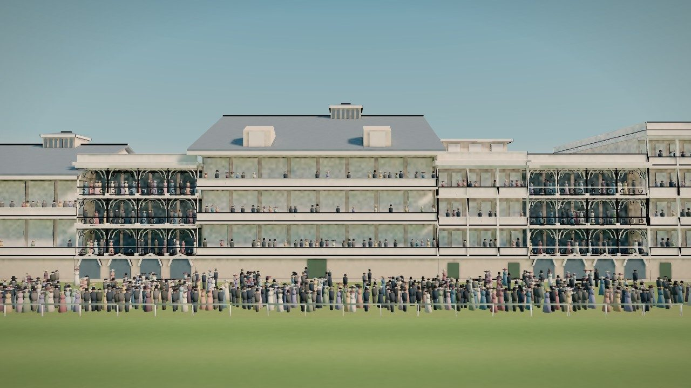
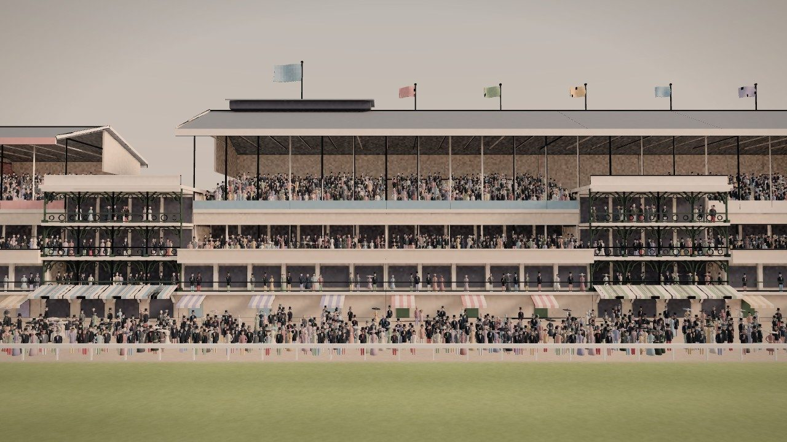
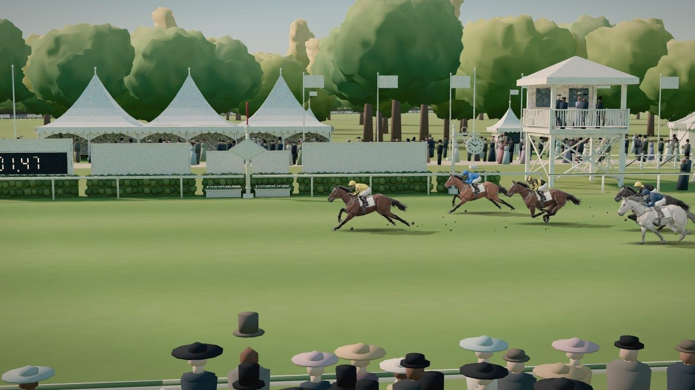
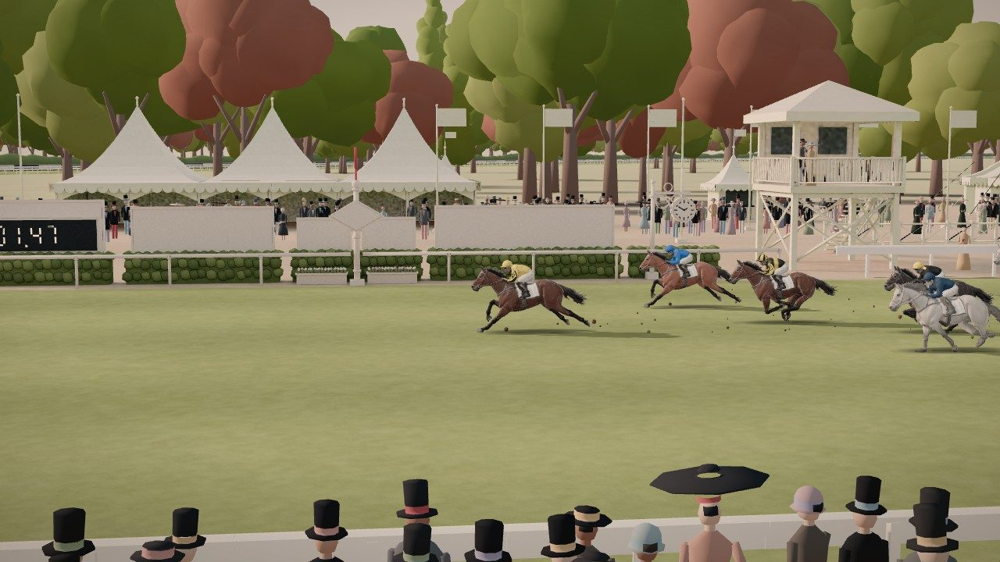
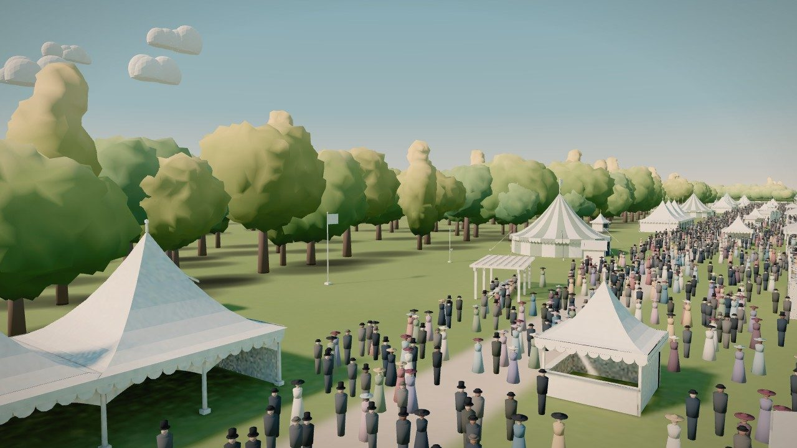
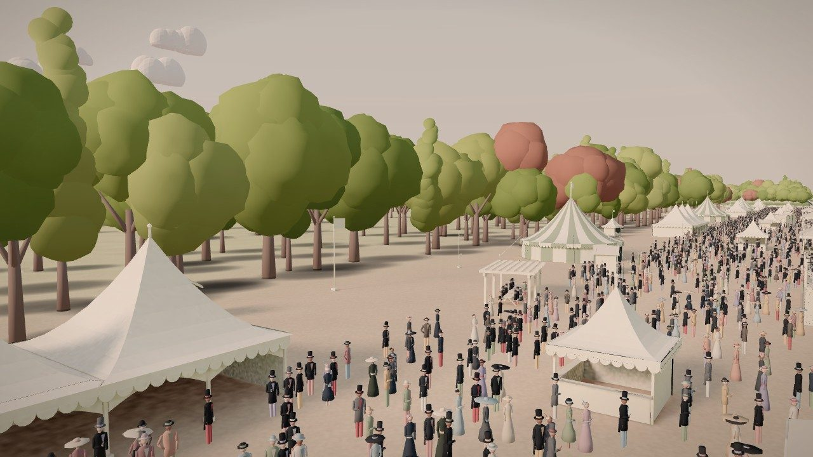

Each camera below is shot three ways from exactly the same spot: the race view as it was yesterday, the race view now, and the Blender study we built today, which is the target. Click any frame to open it full size.
The stand, the crowd, the light and the trees have come across well: side by side, the race view now looks like the study in shape, colour and mood. The turf has not. In the study the track has crisp mown lanes and real depth; in the race view it is still a smooth green floor with faint stripes. The stand is also softer than the study's, because the race view draws its lighter version without the balustrades.
| Part | Blender study | Race view now | Match | To close the gap |
|---|---|---|---|---|
| Turf | Crisp mown lanes, visible tufts, real 3D grass blades | Faint soft lanes, a fine grain close up; reads flat | Biggest gap | Sharpen the lanes into proper bands (re-bake of the ground, about 12 minutes) and add a few layers of short grass near the camera (a standard trick for games: cheap, gives the turf depth). |
| Stand detail | Full-detail model: balustrades, glazing bars, sharp shadow lines | The light version of the stand; light baked into one image for 500 m of building | Clear gap | Use the full-detail stand for the stretch the cameras see close (about 330 m round the post) with its own sharper light images; phones keep the light one. |
| Light and colour | Soft warm sun, pastel sky, matte clay | Same light baked in; same colour handling | Close | Small tuning only. |
| Crowd | Skittle 1C figures, half in black tops and tails | The same figures and colours | Close | Nothing needed. |
| Trees and hedge | Clay clustered crowns, dark leafy hedge | Same trees, a touch brighter; copper beeches too frequent | Close | Fewer copper beeches; slightly deeper greens. |
| Beige ground | Beige beside the track everywhere | Only where the ground is baked (the last two furlongs) | Partly | Carry it on along the rest of the course. |
The study's cameras
Eye 7 m up on the lawn, 28 m in front of the stand
Eye 14 m up on the far side, 80 m from the stand
Eye 3 m up among the crowd by the rail
Eye 30 m up, looking back along the stand
Eye 3.2 m up on the inside rail
Eye 16 m up on the stand, looking out
Eye 6 m up, 690 m east of the winning post
Game cameras (no study render)
Game camera


Game camera


Game camera

